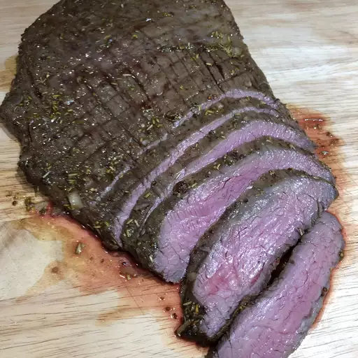

Steak

Grilled Balsamic and Soy Marinated Flank Steak Recipe
Flank steak is a perfect grilling meat. It's marbleized with fat that melts while grilling and fills the meat with the flavor of natural juices.
Ingredients
- ½ onion, chopped
- 3 cloves garlic, chopped
- ¼ cup olive oil
- ¼ cup balsamic vinegar
- ¼ cup soy sauce
- 1 tablespoon Dijon mustard
- 1 tablespoon rosemary
- 1 teaspoon salt
- ½ teaspoon ground black pepper
- 1 ½ pounds flank steak
Steps
- Whisk onion, garlic, olive oil, balsamic vinegar, soy sauce, Dijon mustard, rosemary, salt, and pepper together in a mixing bowl.
- Place flank steak into a large resealable plastic bag. Pour marinade into the bag and coat steak with the marinade. Squeeze excess air from the bag and seal. Marinate in the refrigerator at least 30 minutes, up to 2 days.
- Preheat an outdoor grill for medium-high heat and lightly oil the grate.
- Remove steak from marinade and shake to remove excess liquid. Reserve marinade.
- Cook steak until firm, hot in the center, and just turning from pink to grey, 6 to 8 minutes per side, brushing occasionally with reserved marinade. An instant-read thermometer inserted into the center should read 150 degrees F (65 degrees C). Remove steak to a cutting board and rest meat 5 minutes before slicing thinly across the grain.
Back To The Recipes